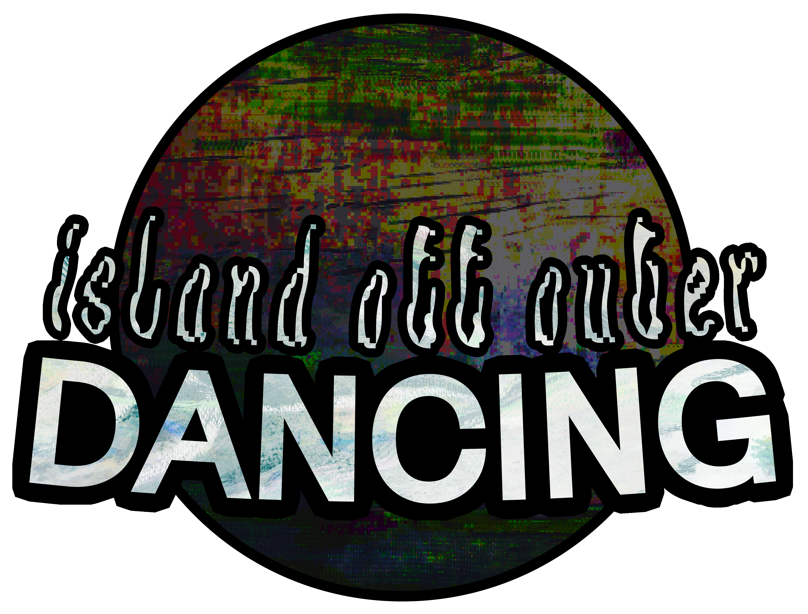

Island Off Outer Dancing features music by CalamityRhapsody, remixes by CalamityRhapsody, MonsoonMusic, "Big Mike" and Prelli, and character and key art by Lambchopper. It also utilizes works made for Island Off Outer Darkness by XD!V@ and undeadpvnk, as well as Island Off Outer Dancing's logo design being inspired by R.F. Slam's work on Island Off Outer Darkness' logo. Island Off Outer Dancing will release Summer 2026, on Steam, for
The initial concept for Island Off Outer Dancing developed throughout early 2026, and began full scale production April 1st, 2026. In addition to all of Island Off Outer Darkness' inspirations, Island Off Outer Dancing takes heavy inspiration from the Persona Dancing trilogy as well as rhythm games like Rock Band.
IOODancing resources available here, IOOD press kit available here.